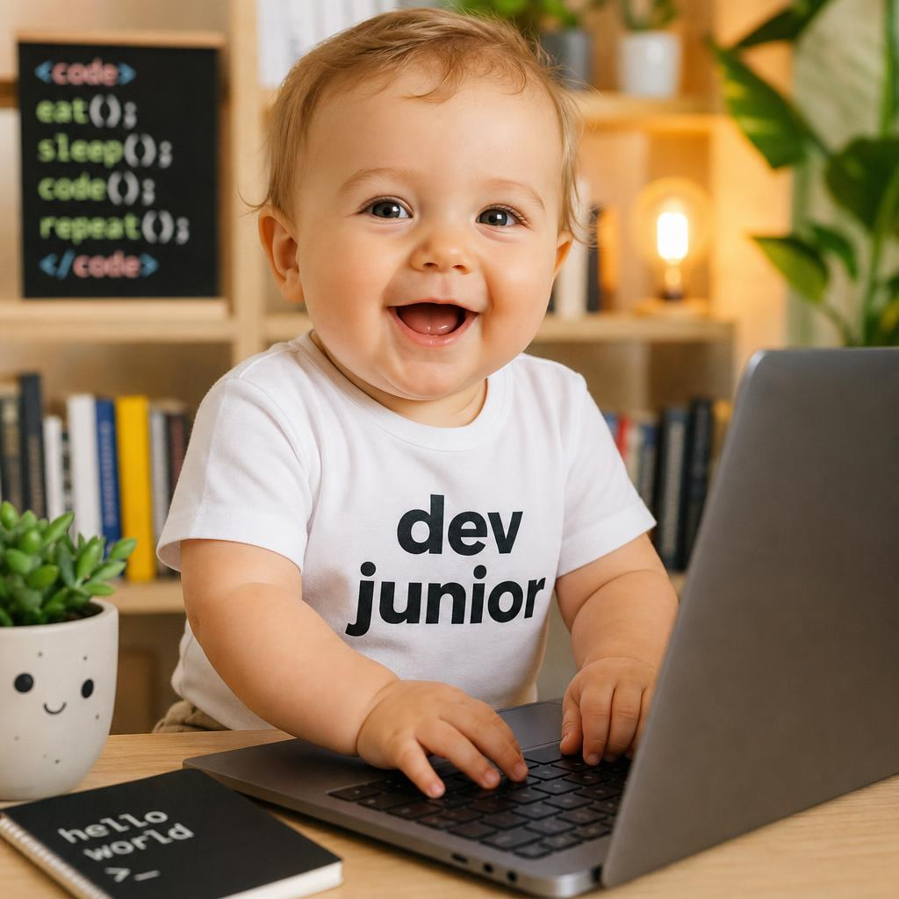
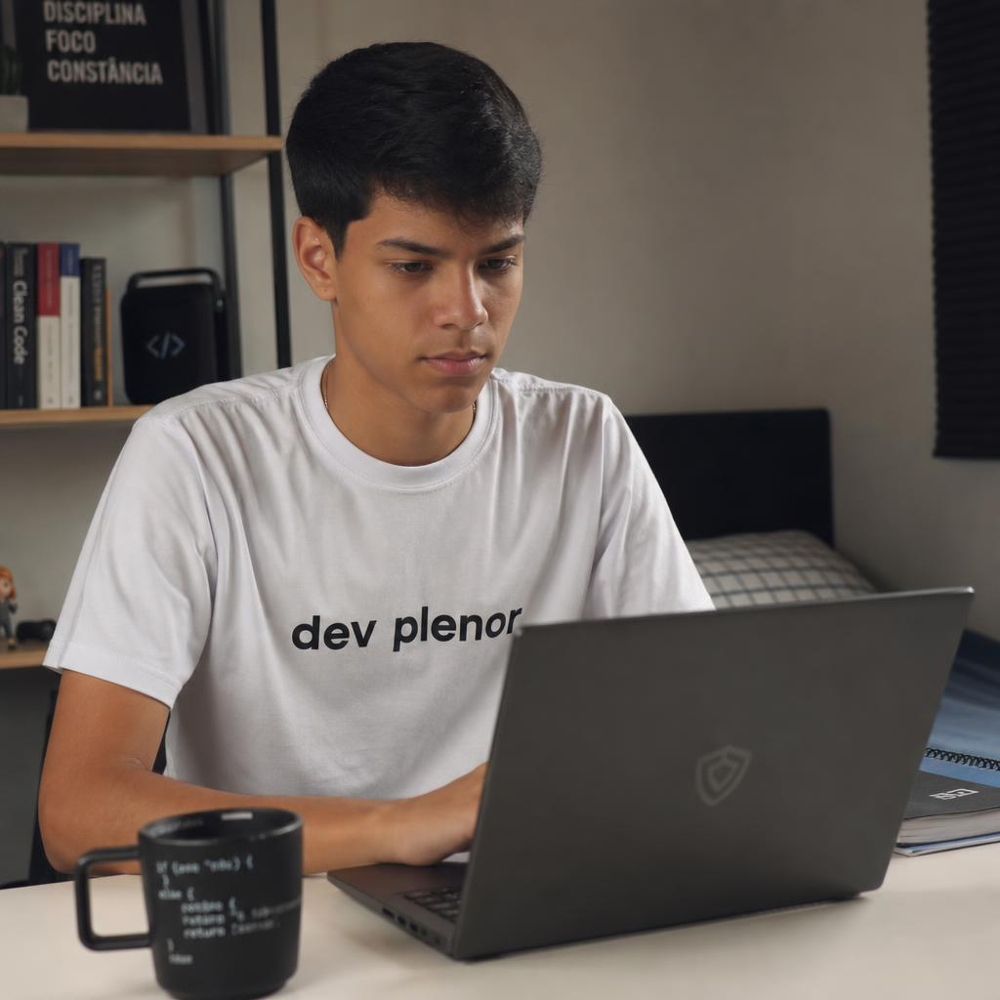

O DevClub, fundado por Rodolfo Mori, começou em 2021.
Isso é corroborado pelas próprias campanhas de aniversário da empresa:
• Em 2025, o DevClub comemorou 4 anos, indicando início em 2021.
• Em 2026, a empresa passou a divulgar o aniversário de 5 anos, reforçando que a fundação ocorreu em 2021.
Rodolfo Mori criou o DevClub após sua carreira como desenvolvedor (com passagens por empresas como
Santander,
BTG Pactual, PI Investimentos e Toro Investimentos), com o objetivo de ensinar programação e ajudar pessoas
na
transição de carreira.
Se você estiver pensando em fazer o DevClub, posso fazer uma análise imparcial comparando-o com outras
opções,
como Alura, Rocketseat, Full Cycle e cursos gratuitos, mostrando os pontos fortes e fracos de cada um.
Independente do seu nivel atual, o DevClub foi criado para quem quer entrar, crescer ou se consolidar no mercado de tecnologia
10k+
Alunos formados
95%
Empregabilidade
4.9/5
Avaliação
+15k
Alunos com vidas transformadas
Domine o desenvolvimento web completo com JavaScript. Aprenda desde o front-end com React até o back-end com Node.js, incluindo bancos de dados e deploy.
Especialize-se em desenvolvimento front-end moderno com React. Crie interfaces incríveis e aplicações web performáticas.
Torne-se um especialista em desenvolvimento back-end com Node.js. Construa APIs robustas e escaláveis.
Desenvolva aplicativos móveis nativos para iOS e Android usando React Native.
Aprofunde seus conhecimentos com a pós-graduação em desenvolvimento FullStack.
Somos reconhecidos pelo MEC
Curso com registro oficial no Ministério da Educação